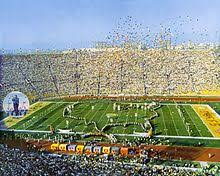
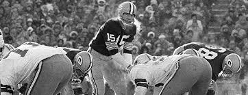
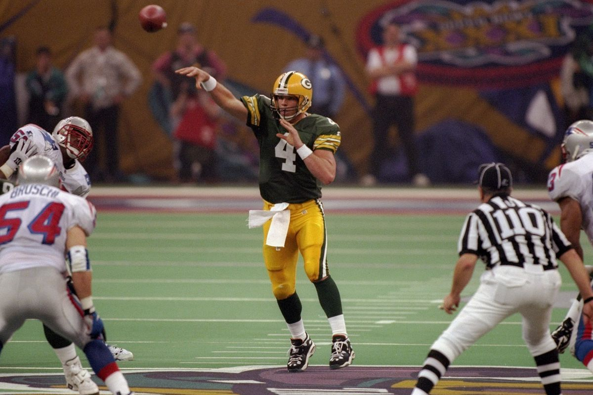
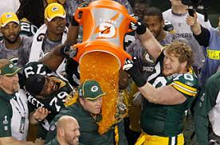
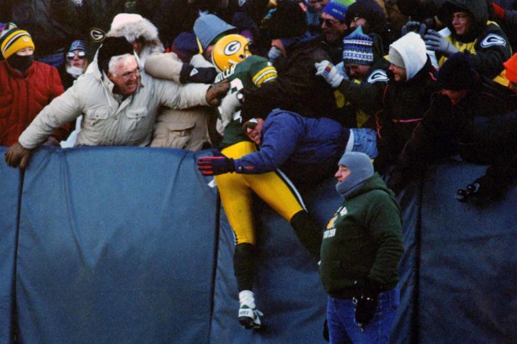
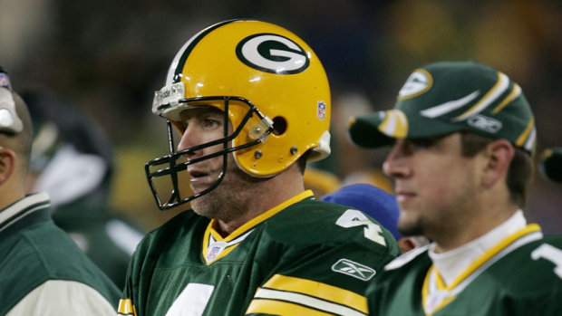

History
Take a look at some of the most iconic moments in Football History
First Two Super Bowls

The Packers won the first two Super Bowls in the NFL
Ice Bowl
On New Years Eve in 1967, the NFL Championship was won by the Packers in one of the coldest games of all time. Temps reached 13 below zero
Third Super Bowl Win

Farve was able to lead the Packers to their third Super Bowl in 1997
Fourth Super Bowl Win
At the end of the 2010 season, the six seed Packers emergeed victorius against the historic Steelers
Lambeau Leap

The Lambeau leap is an iconic celebration now. It all began with LeRoy Butler on December 26, 1993
Two GOATS
Enough said.
